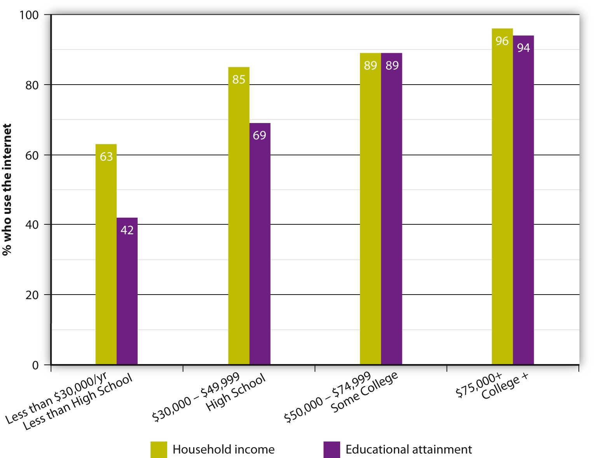

In October 2009, 17-year-old child-care student Ashleigh Hall made friends with a handsome 19-year-old man on Facebook. Ashleigh, from Darlington, England, and her new friend began chatting online and exchanged mobile phone numbers so they could text each other. The excited teenager soon told her friends that she was going on a date with her new boyfriend, Pete, and that his father would be picking her up in his car. Unfortunately, Pete and his “father” were one and the same person—convicted rapist Peter Chapman. The 33-year-old homeless sex offender used his Facebook alter ego (which included photographs of an unknown teenage boy) to lure Ashleigh to a secluded location, where he raped and murdered her. Chapman was arrested by chance shortly after the event, and in court he pleaded guilty to kidnap, rape, and murder.
Ashleigh’s tragic story illustrates some disadvantages of modern media delivery: anonymity and unreliability. Although social networking sites such as Facebook are a convenient way to create new relationships and reconnect with old friends, there is no way of knowing whether users are who they claim to be, leaving people (particularly impressionable youths) vulnerable to online predators. Since much of the content on the Internet is unregulated, this lack of reliability spans the entire online spectrum, from news stories and Wikipedia articles to false advertising claims and unscrupulous con artists on websites such as Craigslist.
However, modern media can also work to mobilize efforts to stop crime. The popular NBC television series Dateline: To Catch a Predator followed police investigators who used Internet chat rooms to identify potential child molestors. Posing as young teens, police officers entered chat rooms and participated in conversations with various users. If an adult user began a sexual dialogue and expressed interest in meeting the teen for sexual purposes, the police set up a sting operation, catching the would-be pedophile in the act. In cases such as these, the rapid transmission of information and the global nature of the Internet made it possible for criminals to be apprehended.
If Ashleigh’s story highlights some of the most negative aspects of modern media, the quick dissemination of news and information are some of the most beneficial aspects of the World Wide Web. As we noted earlier in the chapter, speed can be a huge advantage of online media delivery. When a news story breaks, it can be delivered almost instantaneously through RSS feeds and via many major outlets, enabling people all over the world to learn about a breaking news story mere minutes after it happens.
Once an Internet user has paid for a monthly service provider, most of the content on the web is free, allowing people access to an unlimited wealth of information via news websites, search engines, directories, and home pages for numerous topics ranging from cooking tips to sports trivia. When all this information became readily available at the touch of a button, many journalists and technology experts wrote articles claiming the information overload was bad for people’s health. Fears that the new technology would cause attention deficit disorder, stunt people’s reasoning, and damage their ability to empathize were raised by some highly respected publications, including The Times of London and the The New York Times. However, there is no consistent evidence that the Internet causes psychological problems; in fact, statistics show that people who use social networking sites have better offline social lives, and people who play computer games are better at absorbing and reacting to information than those who do not, and they experience no loss of accuracy or increased impulsiveness.Vaughan Bell, “Don’t Touch That Dial!” Slate, February 15, 2010, http://www.slate.com/id/2244198/pagenum/all/. As Vaughan Bell points out in his article about the history of media scares, “Worries about information overload are as old as information itself, with each generation reimagining the dangerous impacts of technology on mind and brain.”Vaughan Bell, “Don’t Touch That Dial!” Slate, February 15, 2010, http://www.slate.com/id/2244198/pagenum/all/.
In addition to speed, reach, and cost, online media delivery enables a wider range of voices and perspectives on any subject. Through nontraditional media such as blogs and Twitter, people can put their own personal slant on current events, popular culture, and issues that are important to them without feeling obliged to remain neutral. A study by the Pew Research Center found that nontraditional media sources report on a wider variety of stories than traditional media, enabling individual sites to develop their own personality and voice. The study also discovered that these online sources focus on highly emotional subject matter that can be personalized by the writers and shared in the social forum.Pew Research Center, “New Media, Old Media,” May 23, 2010, http://pewresearch.org/pubs/1602/new-media-review-differences-from-traditional-press. By opening up blogs and social media sites to online discussion or debate, bloggers enable readers to generate their own content, turning audiences from passive consumers into active creators. In this way, knowledge becomes a social process rather than a one-way street—the blogger posts an opinion, a reader comments on the blogger’s opinion, the blogger then evaluates the reader’s comment and revises his or her perspective accordingly, and the process repeats itself until an issue has been thoroughly explored. Many bloggers also provide links to other blogs they support or enjoy reading, enabling ideas with merit to filter through various channels on the Internet.
Along with a growing number of online predators misrepresenting themselves on social networking sites, the Internet is responsible for a lot of other types of misinformation circulating the web. Unless users are able to distinguish between reliable, unbiased sources and factual information, they may find themselves consuming inaccurate news reports or false encyclopedia entries. Even so-called reliable news sources are subject to occasional errors with their source material. When French composer Maurice Jarre died in 2009 at the age of 84, Irish sociology and economics student Shane Fitzgerald decided to try an experiment with WikipediaCollaborative, web-based encyclopedia that is freely edited by registered users.. He added fictional quotes to Jarre’s Wikipedia entry and then watched as newspapers worldwide (including reputable sources such as the The Guardian) copied his quotes word for word and attributed them to the composer. Red-faced journalists were later forced to correct their errors by retracting the quotes. Writing a follow-up report for The Irish Times, Fitzgerald commented, “If I could so easily falsify the news across the globe, even to this small extent, then it is unnerving to think about what other false information may be reported in the press.”J. Mark Lytle, “Wikipedia Hoax Shames Major Publishers,” TechRadar, May 10, 2009, http://www.techradar.com/news/internet/web/wikipedia-hoax-shames-major-publishers-597729.
Although most traditional media strive for nonpartisanship, many newer online sources are fervently right wing or left wing. With websites such as the Huffington Post on the left of the political spectrum and the Drudge Report on the right, consumers need to be aware when they are reading news with an ideological slant. Critics fear the trend toward social media sources may lead to the restriction of the movement of ideas. If consumers choose their media circle exclusively consistent with their own political biases, they will be limited to a narrow political viewpoint.
Along with practical disadvantages, the Internet also has several economic disadvantages. An increasing gap between people who can afford personal computers and access to the web and people who cannot, known as the digital divide, separates the haves and the have-nots. Although about 75 percent of U.S. households are connected to the Internet, there are gaps in access in terms of age, income, and education. For example, a recent study found that 93 percent of people age 18–29 have Internet access, compared with 70 percent of people 50–64 and just 38 percent of people over 65.Pew Research Center, “Demographics of Internet Users,” Pew Internet & American Life Project, January 6, 2010, http://www.pewinternet.org/Static-Pages/Trend-Data/Whos-Online.aspx. Similar disparities occur with income and education (see Figure 16.2).
These disparities mean that people with lower incomes and educational levels are at a disadvantage when it comes to accessing online job listings, information, news, and computer-related skills that might help them in the workplace. The digital divide is even more prominent between developed and developing countries. In nations such as Jordan, Saudi Arabia, and Syria, the government permits little or no access to the Internet. In other countries, such as Mexico, Brazil, and Columbia, poor telecommunications infrastructure forces users to wait extremely inconvenient lengths of time to get online. And in many developing countries that have poor public utilities and intermittent electrical service, the Internet is almost unheard of. Despite its large population, the entire continent of Africa accounts for less than 5 percent of Internet usage worldwide.Internet World Stats, “Internet Usage Statistics,” http://www.internetworldstats.com/stats.htm.
Figure 16.2
The digital divide places people with lower incomes and lower educational levels at a disadvantage when it comes to Internet access.
Traditional media also face economic disadvantages when it comes to profiting from the Internet. Having freely given away much of their online content, newspapers are struggling to transition to an entirely ad-based business model. Although publishers initially envisioned a digital future supported entirely by advertising, two years of plummeting ad revenue (the Newspaper Association of America reported that online advertising revenues fell 11.8 percent in 2009) has caused some papers to consider introducing online fees. Although modern media delivery is quick and efficient, companies are still trying to establish a successful economic model to keep them afloat in the long term.
Choose two online newspaper articles or blogs on the same subject, one from a liberal website such as the Huffington Post and one from a conservative website such as the Drudge Report. Read through both articles and underline examples of political bias or prejudice. Then answer the following short-answer questions. Each response should be a minimum of one paragraph.